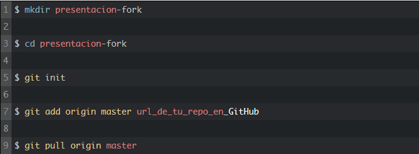

Una vez ya tengas tu proyecto con sus respectivos archivos, sigue éstos pasos:
git init - Inicializar un proyecto nuevo con Git (ejecutar el comando en la carpeta raíz del proyecto): Con éste comando le decimos a nuestro proyecto que vamos a empezar a utilizar Git para controlar sus versiones.
Al ejecutar éste comando, se creará automáticamente una carpeta en el proyecto llamda .git (olculta por defecto); es la carpeta encargada de administrar todos los cambios del código, pero no vamos a tocar nada de esa carpeta.
Nota: El comando se ejecuta una sola vez por proyecto.
git status -s - Para ver el estado de nuestros archivos: Éste comando te permite ver que archivos tienes trabajando, es decir, permite ver los archivos que tienes o los archivos que estás trabajando y que quizá aún no los haz agregado al staging area (es decir, que están por ahí volando).
git add «file» - Para agregar un archivo al Staging area: Con éste comando, le decimos a git que archivos queremos agregar al Staging area. Podemos agregar archivo por archivo individualmente al staging area, o agregarlos todos al mismo tiempo con un punto (.) seguido de la palabra "add" (git add .).
Nota: Cada vez que crees un archivo nuevo, debdes agregarlo al staging area para ser monitoreado por git (Claro, si lo deseas agregar).
git commit -m "mensaje del commit" - Para crear un primer punto de control de nuestro código: Éste comando permite empezar a versionar nuestro proyecto. A partir de aquí, ya se crea la primer versión de nuestro proyecto fija. Es como guardar una copia o una foto temporal del (o los) archivos que le hayamos indicado. Si es primera vez que ejecutas éste comando, quizá git te solicite algunos datos de identificación (tu nombre, correo, etc...), ésto es para decirle a git que desarrollador es el que está haciendo los cambios.
git log --oneline - Para ver todos los commits que hemos creado.
git push - Para enviar los cambios hechos en el código al repositorio remoto: Éste comando permite subir los cambios hechos (y guardados en Staging area) al repositorio remoto GitHub.
git pull - Cuando realizamos cambios directamente en github pero no de forma local, es esencial realizar un pull, donde descargaremos los cambios realizados para seguir trabajando normalmente.
Nota: Es importante estar enlazados remotamente, puedes verificar con: git remote -v, luego ejecuta: git pull.
git reset --hard «ID del commit» - Para retroceder a cierta parte de la historia de commits: Éste comando permite volver al commit que le indiquemos, por si algo que modificaste en ese commit no te convenció o te equivocaste, con el comando git reset --hard puedes volver a ese commit que desees.
Pasos trabajar con ramas BRANCHS
Vídeo 3
git branch «nombreDeLaRama» - Crear una nueva rama: Éste comando permite crear una nueva rama aparte de la rama máster, o mejor dicho, crea una nueva línea del tiempo, o una copia de la rama máster para trabajar en paralelo a la rama máster.
Ej: git branch testBranch.
git checkout «nombreDeLaRama» - Cambiar a la rama indicada: Para cambiar de ramas o movernos entre ellas. Éste comando nos permite movernos o mejor dicho cambiarnos a la rama que hayamos creado con ese nombre, para trabajar en la susodicha.
Ej: git checkout testBranch.
git branch - Éste comando nos permite ver todas las ramas que hemos creado o que tenemos en el proyecto, y nos indica en cuál rama estamos trabajando actualmente.
git merge «nombreDeLaRamaPorFusionar» - Unir o combinar ramas: Una vez tengamos listos los cambios de la rama en la que estemos trabajando, y estemos seguros de querer agregarlos a la rama principal del proyecto, para seguir el orden en la misma línea del tiempo actualizado, ejecutamos el comando: git merge «nombre de la Rama». Antes de ejecutar éste comando, debemos haber previamente guardado los cambios en la rama que vamos a fusionar, es decir, ya tener listo el git add y el commit realizado. Una vez esté el commit hecho, cambiamos a la rama máster (git checkout master) y ahora si ejecutamos el merge: git merge «nombre de la Rama a fusionar».
Ej:
git checkout master
git merge testBranch
git branch -d «nombreDeLaRamaPorEliminar» - Para eliminar la rama que deseemos de git: Si tenemos una rama que ya no vayamos a seguir trabajando o que ya no nos interese, la podemos eliminar con el comando git branch -d.
Ej: git branch -d testBranch.
Fetch
git fetch - Este comando hace la comparación de nuestros archivos locales con los del servidor, si existiera alguna diferencia nos pediría realizar un get pull para realizar un match de nuestros arhivos locales.
Pasos para versionar el proyecto con TAGS
git tag «nombreDeLaVersión»-m "descripción de la versión" - Para crear una nueva versión del proyecto.
Ej: git tag v1.0 -m "primera version".
git push --tags - Guarda esa versión creada en el repositorio.
Pasos para clonar un repositorio
git clone https://github.com/John023/RepasoDeGit.git «nombreCarpeta» - Para descargar un repositorio completo basta con tomar la url ej: https://github.com/John023/RepasoDeGit.git y ejecutar el siguiente comando en alguna carpeta de su computadora.
Nota: Si acabas de clonar el repo remoto, y aún no se ha conectado al local, intenta ejecutando éste comando: git remote add origin [url/to/your/fork], y luego checar con un git remote -v si estamos conectados a la url correcta.
Fork
El fork que nos permite hacer GitHub es muy similar al git clone con la ventaja de que en lugar de clonar el repositorio de forma local, podremos crear una copia en remoto del proyecto que queremos y quedará almacenada en nuestra cuenta personal de GitHub.
Pasos para hacer un Fork:
Ingresamos a la dirección del repositorio que queremos copiar. Ej: https://github.com/John023/RepasoDeGit.git
En la parte superior derecha de la pantalla podemos hacer click en el botón y así de simple se creará un repositorio en nuestra cuenta de GitHub que será una copia del repositorio anterior.
Trabajando en local con un repositorio Fork:
El comportamiento de este nuevo repositorio sera el mismo de cualquier otro que hayamos creado, puede ser clonado, se pueden hacer cambios, registrar commits, etc. Ya que contamos con el repositorio remoto podemos crear una carpeta en local, iniciar git y hacer pull de los cambios, recuerda usar la url de tu nuevo proyecto. Ej: https://github.com/John023/RepasoDeGit.git.

De esta forma todos los cambios commits que realicemos podrán ser enviados al repositorio remoto sin ningún problema.
Nota: los cambios enviados serán almacenados en nuestra copia del repositorio y no afectarán de ninguna forma el repositorio original que hemos clonado.
Aclarando diferencias entre Clone y Fork
Con git clone podemos copiar el código de un repositorio de forma local, pero no estará conectado al repositorio de origen.
Con Fork podremos crear una copia en remoto de un repositorio git en nuestra cuenta de GitHub y de esa forma sera mas fácil clonar de forma local para hacer pull y push de los cambios realizados.
Pasos para subir el proyecto a GitHub Pages (Hosting Gratuito) desde 0
Éstos pasos son para deploy de una aplicación con Angular
git remote -v - Confirmar la url del repositorio remoto (si deseas cambiar la url del repositorio, digita: git remote set-url origin https://github.com//.git, y luego ejecutas el git push -u origin master)
npm i angular-cli-ghpages --save-dev: Instalación - Instalar el paquete githubpages
ng build --prod --base-href https://.github.io// - Verificar la url del repositorio remoto
npx ngh --dir=dist/[PROJECTNAME] - Verificar la url del repositorio remoto
Trucos para escribir comandos de git más rápidos
Crear alias globales: Con el comando: git config --global alias.ponerAbreviatura "comando Original" podemos crear alias de los comandos de git.
Ej: crear un alias para el comando git push: git config --global alias.ps "push".
Ahora, git ps es la manera más rápida y abreviada de ejecutar git push.
Ver los alias creados: git config --global -l.
Realiza el add . y commit más mensaje al mismo tiempo:git commit -am "más comandos agregados".
Para editar un commit, como por ej: el mensaje:git commit --amend.
Cambiar la url del repositorio remoto en local: git remote set-url origin «urlDelRepositorio» - Si llegáramos a cambiar de nombre el repositorio remoto, debemos cambiar la dirección de url en el local también.